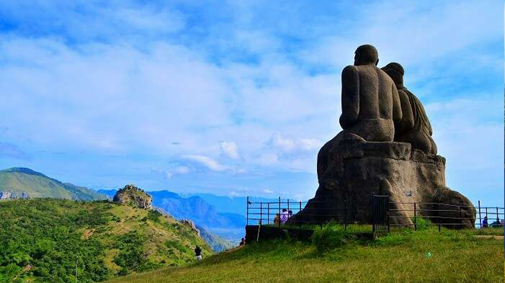
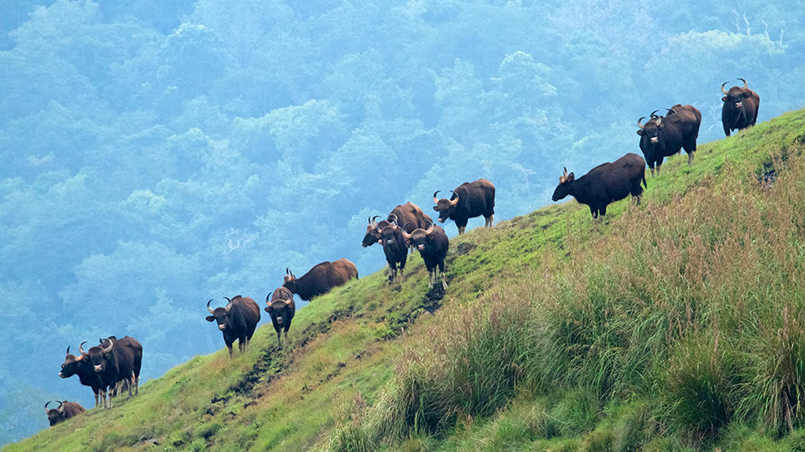

Idukki-God’s Magnificent Creation

Dams in Idukki

Idukki Wildlife Sanctuary

Water Falls

Idukki district is a densely forested, mountainous region in the south Indian state of Kerala. In the north, Anamudi mountain towers over Eravikulam National Park, where the rare, blue Neelakurinji flower blooms every 12 years. Nearby, Munnar is a hill station known for its sprawling tea plantations and Tea Museum. Farther south is the vast, curved Idukki Dam and Periyar National Park, a tiger and elephant reserve.
The Idukki dam is constructed across the Periyar River, in a valley between the Kuravan and Kurathi ... hills in Kerala. The awe-inspiring, majestic dam, which stands at 167.68 meters (550 ft), is one of the highest arch dams in Asia. The dam, which is one of the Idukki tourist places, constructed by the Kerala government in 1975 and supports 780 MW hydroelectric power station that draws electricity from this dam.
The sheer magnitude of the structure along with the mountains, verdant vegetation, and 60 sq. km placid lake, which is created by the 3 dams, Idukki dam, Cheruthoni and Kulamavu, captivate the visitors.
Distance: 33 km from Idukki Dist.

Away from the hustle and bustle of the cities, the Idukki Wildlife is located in the Thodupuzha and Udumpanchola ... taluks of Idukki at an altitude of 450 – 750 ft above the sea level.
The sanctuary, flanked on 3 sides by the tranquil waters of Idukki Lake, is housed amidst picturesque settings of tropical evergreen & semi-evergreen forests, meadows, and deciduous trees.The Wildlife Sanctuary, one of the places to visit in Idukki, houses hordes of wild elephants.
The other species from the animal kingdom include bison, sambar, deer, wild dogs, jungle cats, Malabar Giant Squirrel, wild boars, and tigers. Reptilians such as Cobra, viper, krait, etc will bewilder the visitor, while avian species Malabar grey hornbill, Purple Sunbird, Golden Oriole, and Black bulbul enchant him.
Best time to visit: The most favorable time to visit Idukki Wildlife Sanctuary is between December to April.
Distance: Painavu P.O. Idukki–685603. 40 km from Thodupuzha, Idukki.

Ilaveezha Poonchira, the Shangri-La of Kerala, situated in Melukavu village in Kottayam district is one of the places ... to visit in Idukki. Located at the foothills of the 3 floral hillocks – Mankunnu, Kudayathur, and Thonippara Hills at Kanjar, the bewitching valley is spread across thousands of acres.
“Ila-veezha Poonchira” which means “the pond of flowers where the leaves do not fall” has its roots in Mahabharata. The rains during the monsoon season transmogrify the valley and present an enthralling and hypnotic effect on the visitors. Words fall short to explain the beatitudes of the play of colors on the horizon during the Sunrise and Sunset. Ilaveezha Poonchira is also an ideal destination for trekking.
Distance: 36 km from Idukki
Vandanmedu is located 25 km north of Kumily, on the Thekkady-Munnar Highway. The place is famous for rich spices like ... cardamom and it is said to be the biggest auction centers for Cardamom. The visitors traversing the plantations can enjoy the aroma of cardamom wafting through the air.
The place is also a budding commercial center and is known for its historic colonial-era buildings. The anchel office constructed in the early 20th century by the British housed the first post office in Idukki.
Location: CCSB Rd, Civil Station Ward, Alappuzha, Kerala 688012
Gavi, an eco-tourist spot introduces the visitors to a beguiling scenic beauty that is untouched by the unscrupulous ... reach of modern humankind. Gavi is home to very rare flora.
The only 2 Gopher trees that are believed to be in India, are present in the Gavi forest region. It is also home to Nageia Wallichinia, an endemic variety of the Gymnosperm family.It is domicile to endangered species like Nilgiri Tahr and Lion-tailed Macaque.
The visitors feel amazed and frightened at the hordes of Kerala’s own regal elephants sauntering in the region. Gaur, sambar deer, barking deer, Mouse deer, Wild dogs, tigers, and various species of snakes co-inhibit the region.More than 260 kinds of birds, which include Great pied hornbill, mynas, cuckoos, bulbuls, woodpeckers, kingfishers etc, are a feast to the eyes of the bird watchers.
Distance: 28 km from Kumily near Thekkady.

Malankara Dam is built on the Thodupuzha River, which is the tributary of the Muvattupuzha river, for irrigation purpose. ... Malankara Lake, an artificial lake formed as a part of the Muvattupuzha valley irrigation project is spread over 11 sq.kms. The visitors can enjoy boating and fishing in the lake.
The Malankara Dam is open for tourists throughout the year.A park is under construction in the area adjoining the reservoir, admeasuring 15 acres.
Distance: 52 km from Kottayam.

Another of the Idukki tourist places, Sita Devi Lake, is located at an altitude of 1800 meters (5900 ft) above the sea level. ... The lake also referred to as Devikulam, which means lake of the Goddess, is supposedly linked to the epic Ramayana. According to the myth, it is said that Goddess Sita Devi, the consort of Lord Rama, had bathed in these waters.
Tourists prefer to take a dip in the waters of this lake, not only due to its sacredness but also because of the purported curative powers of its mineral waters. The distant cloud-capped the Blue Mountains, the velvety rolling evergreen hills, and the natural vegetation of slim red, blue, and yellow gum trees hypnotize the visitors.
This makes it a wonderful picnic spot. Its pristine waters also make it be a perfect place for trout fishing. Devikulam is a trekkers’ haven.
Distance: 5 km from Munnar.

Kulamavu Dam, one of the triumvirate dams of the Idukki reservoir project, is constructed in 1961 to restrict the flow of ... water into Kallivally rivulet. The 100 ft gravity dam built of concrete or stone masonry on the Periyar River stretches out between rocky mountains and forms 33 sq.km reservoir. Kulamavu, one of the places to visit in Idukki, is also a famous hill station in Idukki district.
The 60 sq. km artificial lake formed as a result of the construction of the 3 dams, add scenic beauty to the rugged rocky terrain and verdant vegetation around it.
The hill station charms the visitors with the picturesque countryside, rubber and spice plantations. The visitors go gaga over the various species of birds such as darter or snakebird, kingfisher etc. that inhabit the hill station. Kaulamavu offers remarkable trekking trails with equally enchanting environs that kick the adrenalin of hiking or trekking fanatics.
Distance: 5 km from Periyar river, Idukki.
Mangala Devi temple is a historic temple situated in the dense forests of Periyar Tiger Reserve in the Idukki district of ... Kerala bordering Tamil Nadu State. The fable prevalent among the natives elucidates that Kannagi, a devout Tamil woman, had wreaked destruction on the Pandyan dynasty through her curse for unjustly executing her husband, Kovalan in a theft case.
Kannagi is extolled as the epitome of chastity and is bestowed the position of the goddess. The ancient Tamilakam King, Chera Chenguttuvan, constructed this temple, around 2000 yrs ago. So, the temple is known for Pandiyan architecture.
Apart from Mangala Devi, the idols of Lord Shiva, Lord Karuppuswamy and sanctorium of Ganesh adorn the temple.Only during Chitrapournami festival, which falls in the Summer season (April/May), the devotees can visit and offer the prayers. The 12 km stretch to the temple can be accessed only through Jeep.To visit the Mangala Devi during other times prior special permission must be sought from the forest ranger.
Distance: Pazhiyankudi, Idukki.
Painavu, one of the popular places to visit in Idukki, is located at a height of 3,900 ft above the sea level, inside the Idukki ... Wildlife Sanctuary. Painavu, encircled by the expansive forest cover and mountainous range, is a favorite spot for trekking enthusiasts. The tracts take the trekkers through the resplendent forests, plantations, and quaint hamlets.
An important commercial center, Painavu, is accessible only by road and is closest to other tourist hubs of Idukki like Idukki Arch Dam, Cheruthoni Dam, and Kulamavu. The sight of elephants sauntering on the roads during winter and rainy seasons will astound the visitors.
Best time to visit: The most favorable time to visit Painavu is after monsoon season, between September and May.
Location: Kavanattinkara, Kumarakom, Kerala – 686563.